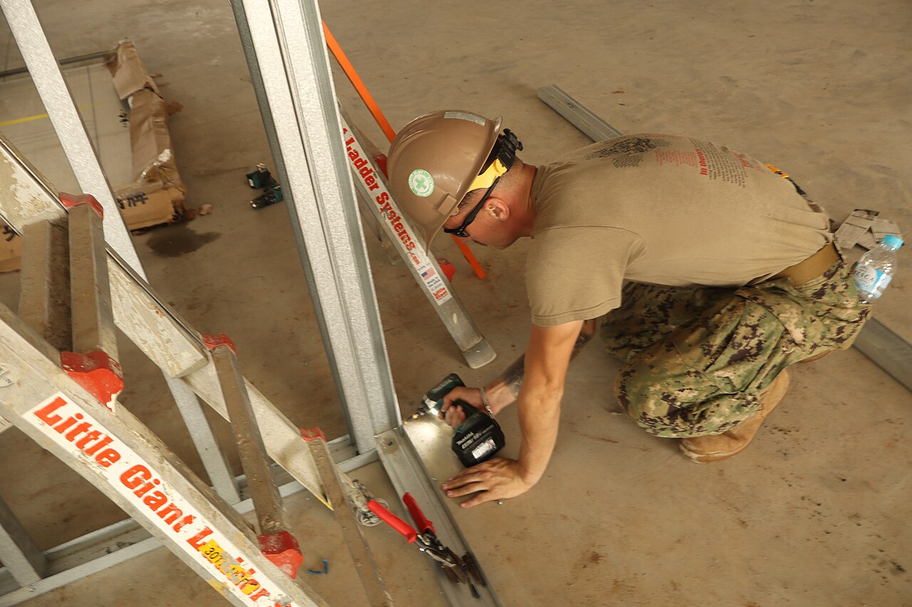

Etapa 1 · Estrutura
Perfis metálicos
O "esqueleto" da parede ou do forro. Usamos aço galvanizado, que não enferruja nem empena.
- Guias
- Fixadas no piso e no teto, definem onde a parede vai ficar.
- Montantes
- Perfis verticais encaixados nas guias. Usamos 48, 70 ou 90 mm, conforme a espessura da parede.
- Cantoneiras e tabicas
- Protegem os cantos e fazem o arremate entre parede e forro.